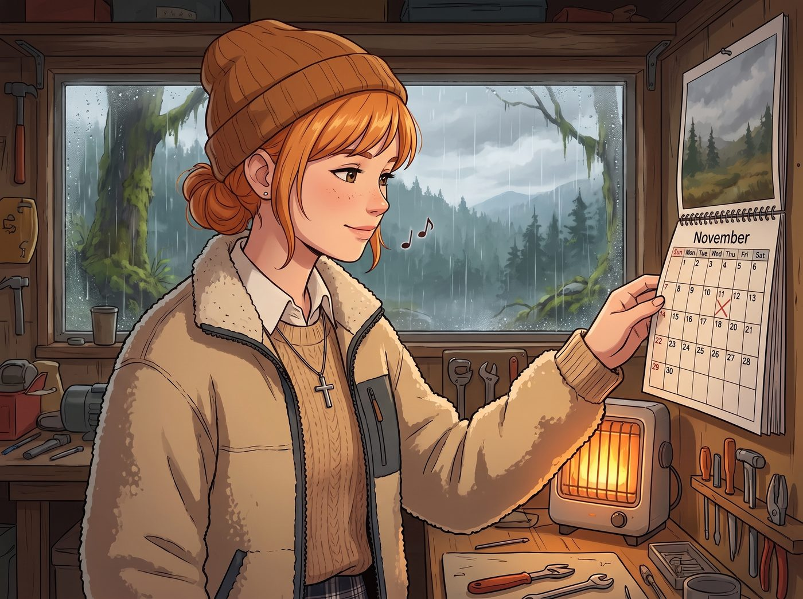

生物學來源實體

在《奇妙人生》的宇宙裡，沒有人的靈魂是完美無缺的。每個角色的底色裡，幾乎都潛伏著某種原生家庭帶來的、深刻入骨的創傷。
對於實習生 Lily 來說，那套密不透風的合規裝甲與行政黑魔法，與其說是她的武器，不如說是她為了隔絕某種過去而建立的絕對防禦。當日常的溫馨不小心觸碰到這條底線時，那台永遠精密運轉的超級電腦，就會暴露出令人心碎的物理Bug。
十一月的奧林匹亞半島，雨季已經降臨。二號車廂裡開著暖氣，Kate 正哼著聖歌，在工作台的一角翻看著一本實體日曆。
一、搶答般的防禦
「下個月就是感恩節和聖誕節了呢。」Kate 溫柔地用紅筆在日曆上畫了幾個圈，轉頭看向正在各忙各的眾人，「Max，Chloe，Victoria，妳們今年有打算回老家，或者邀請家人來過節嗎？如果大家都不回去的話，我就可以開始提早預訂火雞和食材了。」
車廂裡的空氣出現了短暫的停滯。
對於這個充滿邊緣人的團隊來說，家庭從來不是一個輕鬆的詞彙。Chloe 想到母親和繼父，煩躁地咂了下嘴；Max 想著自己那對永遠在無條件支持她、卻又對她經歷的超自然創傷一無所知的父母，感到一陣沉重；而 Victoria 則冷笑了一聲，她那個只看重信託基金回報率的財閥家族，過節不過是另一場大型的商業社交作秀。
就在這份屬於原生家庭尷尬即將蔓延開來時——
「我強烈建議啟動全員在地過冬協議。」
一個軟糯的聲音以一種極度不自然、幾乎是搶答般的速度，切斷了所有的沉默。
眾人轉過頭，看到 Lily 正端坐在她的多螢幕工作站前。她沒有看任何人，雙眼死死盯著螢幕上一份根本沒有在滾動的數據圖表。
「從風險控制的角度來看，傳統節假日家庭聚會具備極高的不可控性。」Lily 的語速比平時快了足足一倍，那些冰冷的行政黑話像機關槍一樣從她嘴裡噴射出來，「它不僅會產生大量無效的社交碳足跡、增加暴露在流感病毒下的生物安全風險，更會導致核心成員的情緒資產負債表出現嚴重的赤字。為了團隊的最高利益，我已經單方面向我的生物學來源實體發送了無限期終止線下接觸的法務聲明。」
這段話聽起來和她平時用合規條文把別人逼瘋時一模一樣。但語氣不對。
平時的 Lily，說這些話時總是帶著一種游刃有餘的、貓抓老鼠般的純潔惡意，會慢條斯理地推眼鏡，享受看著對手崩潰的過程。但現在，這段話僵硬得就像是某種為了自救而觸發的防禦性自動回覆。沒有停頓，沒有抑揚頓挫，甚至連呼吸的節奏都被刻意屏住了。
二、強光下的本能
「生物學來源實體？」
Chloe 皺起眉頭，對這個極端冷血的詞彙感到一絲錯愕。她從沙發上站起來，手裡剛好拿著一把正在維修用的、散發著強烈白光的戰術手電筒。
Chloe 幾步走到 Lily 的工作台旁，彎下腰，隨手將手電筒的光束從下往上掃過，湊近了去看這個總是深藏不露的實習生。
「喂，小惡魔，妳連親生父母都用這種防禦性法規來定義……」
「啪。」
在戰術手電筒的強光掃過 Lily 側臉，且 Chloe 高大的身軀突然靠近她視覺盲區的那零點一秒裡——
Lily 產生了一個極度劇烈的物理反射。她原本放在鍵盤上的右手猛地抬起，去推鼻樑上的圓框眼鏡。
這個動作比她平時快了整整半拍。平時，她推眼鏡是用食指輕輕點住鏡架，帶著一種運籌帷幄的優雅。但這一次，她的手掌幾乎是完全張開的，手臂以一種極度防禦性的姿態擋在臉側，與其說是推眼鏡，更像是在強光與人影逼近的瞬間，本能地想要護住自己的頭部和眼睛，以抵擋某種預期中的物理打擊。
因為動作太猛烈，她的指關節甚至重重地磕在了鏡框上，發出了一聲清脆的撞擊聲。圓框眼鏡被推歪了一點點。
三、凍結的空氣
車廂裡的空氣瞬間凍結了。
Chloe 舉著手電筒僵在了原地。作為一個從小在街頭打架、渾身是傷的叛逆少女，Chloe 太熟悉這個動作了。那是長期處於某種高壓或暴力環境下的人，在面對突如其來的光線或靠近時，無法被大腦控制的受虐閃避反射。
Lily 依然保持著那個用手掌半遮住臉的怪異推眼鏡姿勢。她的呼吸變得極度急促，胸口微微起伏著。螢幕的反光打在她蒼白的側臉上，那雙總是在計算概率的大眼睛裡，此刻只剩下一片空洞的恐慌。
一秒。兩秒。
「……咳。」
Max 突然用力咳嗽了一聲，打破了死寂。她大步走過來，一把將 Chloe 手裡的手電筒奪走，關掉。
「Chloe Price，妳是白痴嗎？拿幾千流明的戰術手電筒去晃一個每天盯著螢幕十二個小時的人的眼睛？」Max 狠狠地踩了 Chloe 一腳，然後轉過頭，用一種極度輕鬆、彷彿什麼都沒發生的語氣對 Kate 說，「Kate，我同意 Lily 的在地過冬協議。回家過節太麻煩了，我們就在車廂裡過吧。我要吃妳做的蔓越莓烤火雞，而且食材清單讓 Victoria 去報銷。」
「非常同意。」Victoria 敏銳地察覺到了氣氛的異樣，立刻順著 Max 的話接了下去，「我會把最好的有機火雞農場包下來。只要能讓我遠離我那些虛偽的親戚，花多少錢都無所謂。」
Chloe 揉了揉被踩痛的腳，也反應了過來。她默默地退後了兩步，拉開了與 Lily 的距離，重新坐回沙發上。「是啊，去他的家庭聚會。我們這群怪胎待在一起就挺好的。老娘負責去砍聖誕樹。」
四、不被揭開的傷疤
工作台前，Lily 慢慢地、輕輕地將手放了下來。她深吸了一口氣，用雙手將那副被推歪的圓框眼鏡重新扶正。當她再次轉過頭時，那個軟糯、精密、帶著完美微笑的行政黑魔法師又回來了。
「感謝各位學姐對在地過冬協議的支持。」Lily 的聲音恢復了平穩的甜美，手指重新在鍵盤上靈活地跳躍起來，「我現在就去擬定一份節假日物資採購預算表，並確保所有的火雞和裝飾品都能以團隊心理健康建設的名義，實現百分之百的合法免稅。」
沒有人去詢問她剛才的僵硬，也沒有人去深究她口中的生物學來源實體到底對她做過什麼，讓她連看到強光靠近都會本能地護住頭。
在《奇妙人生》的世界裡，同類之間有一種無聲的默契。她們知道，有些傷疤不需要被立刻揭開。Max 只是默默地走過去，將一杯溫熱的牛奶輕輕放在了 Lily 的滑鼠旁邊，而 Lily 則用非常微小的幅度，朝著 Max 點了點頭。
在這個由核反應爐和合規法條構築的堡壘裡，這個擁有著最恐怖大腦的十九歲女孩，終於找到了一個即使她出現物理Bug，也不會受到任何傷害的避風港。